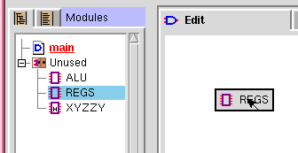
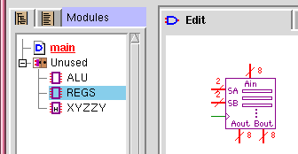
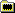

3.2 Creating Module Instances
1) Select a module from the module list.

2) Drag to the insertion location.

3) Release mouse button to create.
Figure 3.1: Creating a Module Instance
Another way to create a module instance is to right click and select "Components → Module → Module Instance" from the pop-up menu, or use the "B" keyboard shortcut. When you do this, the "Details" page of the module properties box will appear to allow you to select which module you wish to create an instance of. Select a name from the list box labeled "Function", or press "New..." to create an instance of a new type of module that you intend to define later. After you have selected the type of module, press "OK" to create the module instance. If you press "Cancel", the operation will be aborted and no module will be created.
When you create a module instance, that instance will have a unique
instance name, distinct from the name of the module type or function.
The instance name allows you to distinguish between different
instances of a module. For example, if you create two REGS modules,
one might have an instance name of "g1" and one might have an instance
name of "g2". Normally, TkGate automatically assigns the instance
name, but you can change it on the "General" tab of the Gate Properties Box dialog box.
Note that this dialog box displays and modifies properties of the
module instance, not the underlying module implementation.
TkGate's module hierarchy view displays the module hierarchy of your
design. Be sure you have selected
Consider the example shown to the right. The top-level module "main"
is indicated by the symbol next to it.
In this example, "main" uses one or more module instances of the
"EUNIT", "IUNIT" and "MEMORY" modules. The "REG16" module uses one or
more instances of the "REG4" and "ZREG4" modules, but the
Each module in the module list or hierarchy view is preceded by a
symbol showing its type. The possible types are:
HDL and net-list modules may also contain a "lock" on them (for
example
There are also several property flags that you can set for your module:
3.3 Module Hierarchy
Your design in TkGate is comprised of a hierarchy of module instances.
There is one module that is designated the top-level module. By
default, this module is called "main", but you can rename it to any
module you wish. You can also designate any module in your design to
be the top-level module. Module instances that are directly included
in the top-level module form the next level in the hierarchy, and
modules instances included in those 2nd layer modules form the next
layer and so on.
3.3.1 Module Hierarchy View
Figure 3.3: Module
Hierarchy View
 to see the hierarchical view. When you are in
edit mode, the hierarchy is shown in terms of module implementations.
That is, at each node in the tree, the children are the names of the
modules which are used as instances at least once in the module.
to see the hierarchical view. When you are in
edit mode, the hierarchy is shown in terms of module implementations.
That is, at each node in the tree, the children are the names of the
modules which are used as instances at least once in the module.
 symbol next to "REG4" tells us that there is no
definition for that module. The module "ZREG4" shown in red with an underline
indicates that that module is the current module in the editor. The
symbol next to "REG4" tells us that there is no
definition for that module. The module "ZREG4" shown in red with an underline
indicates that that module is the current module in the editor. The
 symbol next to "EUNIT" underneath "ZREG4"
indicates a conflict. ZREG4 includes an instance of "EUNIT", but
"ZREG4" itself is contained in an "EUNIT" (it is in "REG16" which is
in "EUNIT"). Circuits containing conflicts can not be simulated, all
conflicts must be resolved before you can simulate.
symbol next to "EUNIT" underneath "ZREG4"
indicates a conflict. ZREG4 includes an instance of "EUNIT", but
"ZREG4" itself is contained in an "EUNIT" (it is in "REG16" which is
in "EUNIT"). Circuits containing conflicts can not be simulated, all
conflicts must be resolved before you can simulate.
Symbol Description The top-level module. 
A normal net-list module. 
A text HDL module. 
Collection of module libraries.  A module library A module defined in a library. 
Collection of modules defined but not used in the circuit. Reference to an undefined module in hierarchical list. Conflict/recursive definition in hierarchical list.  ). The lock indicates that
editing of that module has been disabled in the module options dialog
box.
). The lock indicates that
editing of that module has been disabled in the module options dialog
box.
3.3.2 Navigating to Modules
Double click on a module in the module hierarchy or module list view
to open that module in the editor. You can also right click on a
module instance in the main editing window and select " Open". When you use " Open" to open modules, TkGate will remember
the modules you have opened on a stack. The modules on the stack will
be displayed in red, with an underline under the module currently
displayed in the editor. To close a module, and return to the parent
module on the stack, right click in a blank area on the canvas and
select "
Open". When you use " Open" to open modules, TkGate will remember
the modules you have opened on a stack. The modules on the stack will
be displayed in red, with an underline under the module currently
displayed in the editor. To close a module, and return to the parent
module on the stack, right click in a blank area on the canvas and
select " Close".
Close".
3.4 Creating and Manipulating Modules
3.4.1 Creating Modules
To create a new module, press the button on the toolbar. This will open the
dialog box shown in Figure 3.4. After you
have opened the dialog box, choose a name for your module and enter it
into the "Name" field. Next, choose a module type. A "netlist"
module is one that is defined graphically by connecting gates and
other modules, and "HDL" module is one that is defined by typing a
text description of the module. You can not change the type once the
module has been created. In order to change the type, you must delete
the module and create a new one of the new type.
3.4.2 Editing Module Properties
You can edit the property flags of a module by right clicking on the
module name in the module list and selecting " Properties...". This will bring up a dialog
box like the one shown in Figure 3.5. The
dialog box will show the name of the module, the name of the file from
which that module was loaded, and the type of the module (netlist or
HDL). These properties can not be modified. The modifiable
attributes of modules are the same as those previously described in
Section 3.4.1 Creating Modules.
3.4.3 Deleting, Copying and Renaming Modules
To delete a module implementation, right click on a module in the module list and select " Delete". This will
bring up the dialog box shown in Figure 3.6.
Press "OK" to delete the module. You can also change the module to be
deleted by selecting its name from the drop down list. Any instances
of the deleted module used in your design, will not be deleted. If
you attempt to simulate, you will get an undefined module error.
Delete". This will
bring up the dialog box shown in Figure 3.6.
Press "OK" to delete the module. You can also change the module to be
deleted by selecting its name from the drop down list. Any instances
of the deleted module used in your design, will not be deleted. If
you attempt to simulate, you will get an undefined module error.
 Copy". This will bring up a dialog
box like the one shown in
Copy". This will bring up a dialog
box like the one shown in  Rename". This will bring up a dialog
box like the one shown in Figure 3.8. Make sure the "From" field shows the
name of the module you wish to copy. Enter the new name for the
module in the "To" field.
Rename". This will bring up a dialog
box like the one shown in Figure 3.8. Make sure the "From" field shows the
name of the module you wish to copy. Enter the new name for the
module in the "To" field.
 Claim".
This will bring up a dialog box like the one shown in
Claim".
This will bring up a dialog box like the one shown in  Set As Root". This will bring
up a dialog box like the one shown in
Set As Root". This will bring
up a dialog box like the one shown in  Interface" tab in the main edit window.
Interface" tab in the main edit window.

 tool and "cut" the wire off the edge of the
interface.
tool and "cut" the wire off the edge of the
interface.
 button on
the toolbar to automatically boldify your symbol. However, you may
want to use the editor to do some final touch-ups.
button on
the toolbar to automatically boldify your symbol. However, you may
want to use the editor to do some final touch-ups.


 and
and  buttons to rotate the port clockwise or
counter-clockwise.
buttons to rotate the port clockwise or
counter-clockwise.
 overwrites all bits with the contents of the
cut buffer. The overlay paste , pastes only the bits that are set in the
cut buffer, combining the cut buffer with the existing image. The
selection also limits the scope of the bit shifting and rotating
operations to the selection.
overwrites all bits with the contents of the
cut buffer. The overlay paste , pastes only the bits that are set in the
cut buffer, combining the cut buffer with the existing image. The
selection also limits the scope of the bit shifting and rotating
operations to the selection.
 and
buttons to rotate the
image clockwise or counter-clockwise, or the shift buttons such as
to shift the bits left, right,
up or down. You can use the area selection tool to limit the scope of these operations to
the selected area.
and
buttons to rotate the
image clockwise or counter-clockwise, or the shift buttons such as
to shift the bits left, right,
up or down. You can use the area selection tool to limit the scope of these operations to
the selected area.